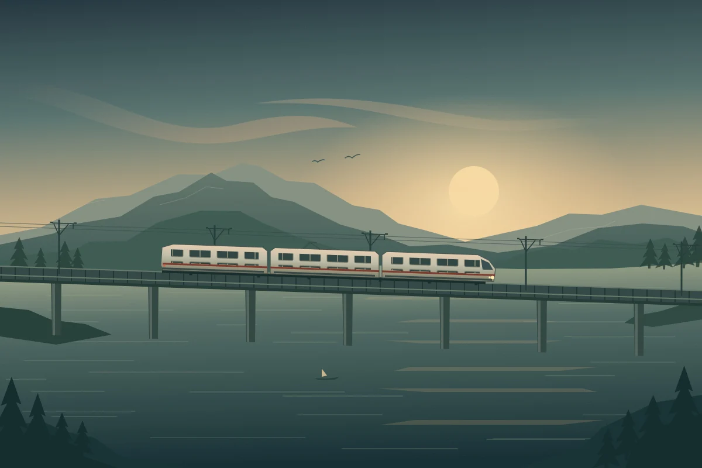
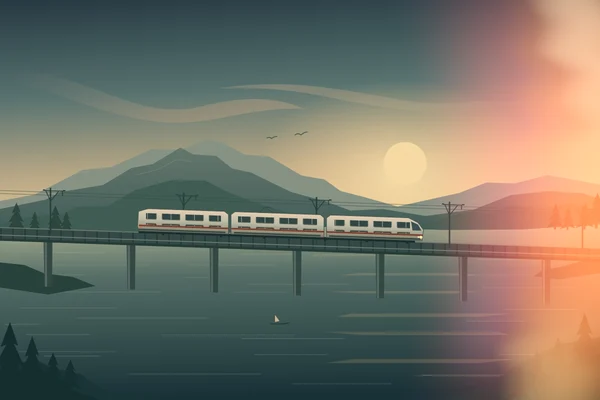
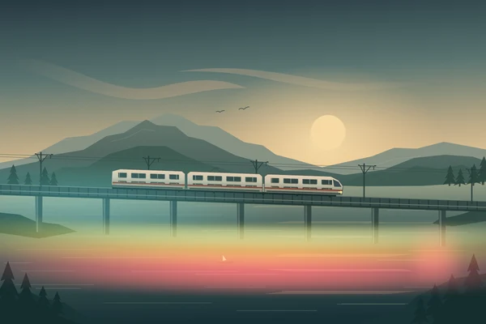
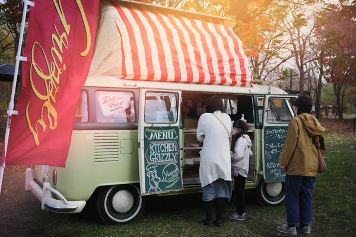

01 / Original: right
Slit Flare
A white beam, a red curtain and a separate cyan reflection.
Unofficial GRKit module · Beta
Let a little light in. Give your JPEGs the streaks, washes and warm edges of a film camera’s light leak, right in your RICOH GR III.
Installation guide
Before With Light Leak
With Light Leak
The looks
From a thin white streak to a wash of color. Start with a style, then choose where it enters and how strong it is.
A white beam, a red curtain and a separate cyan reflection.

An irregular bright seam with red-orange spill.

A gold band with a red lip and cool fringe.

A pool of amber light with a diagonal red tail.

Red and gold bend into teal and blue.
A soft diagonal wash of gold, teal, blue and rose.
All six examples use the same illustration, Medium strength, the Original entry side and Variation 1. They are not camera captures.
On the camera
Open Light Leak to pick a look. Use Fn to change the settings.